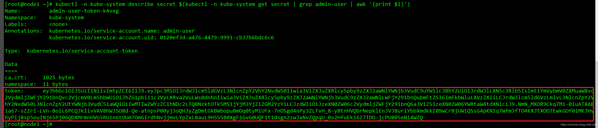
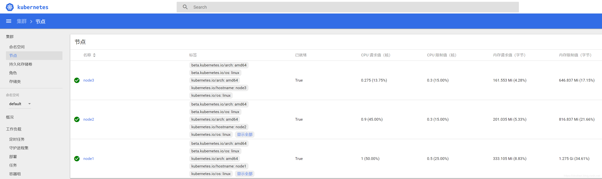

Kubespray是开源的kubernetes部署工具，整合了ansible，可以方便的部署高可用集群环境，官网地址：https://github.com/kubernetes-sigs/kubespray，本文是用kubespray2.11版本部署kubernetes1.15版本的实战；
本次实战采用官方推荐的在线安装，因此会去谷歌镜像仓库下载镜像，需要您的网络可以访问谷歌服务；
本次实战共计四台机器，它们的主机名、IP地址和作用描述如下：
| 主机名 | IP地址 | 作用 |
|--|--|--|
| ansible | 192.168.133.134 | ansible主机 |
| a001 | 192.168.133.139 | k8s集群的一号工作节点 |
| a002 | 192.168.133.140 | k8s集群的二号工作节点 |
| a003 | 192.168.133.141 | k8s集群的三号工作节点 |
本次实战的所有机器都要做以下设置：
systemctl stop firewalld && systemctl disable firewalldsetenforce 0
sed -i --follow-symlinks 's/SELINUX=enforcing/SELINUX=disabled/g' /etc/sysconfig/selinuxmodprobe br_netfilter
echo '1' > /proc/sys/net/bridge/bridge-nf-call-iptables
sysctl -w net.ipv4.ip_forward=1[root@ansible ~]# ssh-keygen
Generating public/private rsa key pair.
Enter file in which to save the key (/root/.ssh/id_rsa):
Created directory '/root/.ssh'.
Enter passphrase (empty for no passphrase):
Enter same passphrase again:
Your identification has been saved in /root/.ssh/id_rsa.
Your public key has been saved in /root/.ssh/id_rsa.pub.
The key fingerprint is:
SHA256:Empen3/RfLndRkS8mKfkq6a2IXtSdqwK7TqKNoHkNEU root@ansible
The key's randomart image is:
+---[RSA 2048]----+
| .E . |
| . o|
| . . o..|
| + . . + o.|
|= . o o S . ooo..|
|.o o ..o + o.oo.o|
| . .. o=.o ..o+|
| o. .o.o=.... .+|
|......o+=o=o. . |
+----[SHA256]-----+[root@ansible ~]# ssh-copy-id root@192.168.133.139
/usr/bin/ssh-copy-id: INFO: Source of key(s) to be installed: "/root/.ssh/id_rsa.pub"
The authenticity of host '192.168.133.139 (192.168.133.139)' can't be established.
ECDSA key fingerprint is SHA256:DPE2nldWHiOhC4DB9doy7jPWNZVup6XFZ+sR2i1gqz8.
ECDSA key fingerprint is MD5:fc:21:f7:7f:e8:cd:1a:76:d7:fb:cc:d4:28:91:f3:5a.
Are you sure you want to continue connecting (yes/no)? yes
/usr/bin/ssh-copy-id: INFO: attempting to log in with the new key(s), to filter out any that are already installed
/usr/bin/ssh-copy-id: INFO: 1 key(s) remain to be installed -- if you are prompted now it is to install the new keys
root@192.168.133.139's password:
Number of key(s) added: 1
Now try logging into the machine, with: "ssh 'root@192.168.133.139'"
and check to make sure that only the key(s) you wanted were added.至此，ansible主机可以用命令ssh root@192.168.133.139、ssh root@192.168.133.140、ssh root@192.168.133.141免密码登录a001、a002、a003了；
yum install -y epel-release ansibleeasy_install pippip2 install jinja2 --upgradeyum install python36 -ymkdir /usr/local/kubespray && cd /usr/local/kubespray/wget https://github.com/kubernetes-sigs/kubespray/archive/v2.11.0.tar.gztar -zxvf v2.11.0.tar.gzcd kubespray-2.11.0/pip3 install -r requirements.txtcp -rfp inventory/sample inventory/mycluster[root@ansible kubespray-2.11.0]# tree inventory/
inventory/
├── local
│ ├── group_vars -> ../sample/group_vars
│ └── hosts.ini
├── mycluster
│ ├── group_vars
│ │ ├── all
│ │ │ ├── all.yml
│ │ │ ├── azure.yml
│ │ │ ├── coreos.yml
│ │ │ ├── docker.yml
│ │ │ ├── oci.yml
│ │ │ └── openstack.yml
│ │ ├── etcd.yml
│ │ └── k8s-cluster
│ │ ├── addons.yml
│ │ ├── k8s-cluster.yml
│ │ ├── k8s-net-calico.yml
│ │ ├── k8s-net-canal.yml
│ │ ├── k8s-net-cilium.yml
│ │ ├── k8s-net-contiv.yml
│ │ ├── k8s-net-flannel.yml
│ │ ├── k8s-net-kube-router.yml
│ │ ├── k8s-net-macvlan.yml
│ │ └── k8s-net-weave.yml
│ └── inventory.inideclare -a IPS=(192.168.133.139 192.168.133.140 192.168.133.141)CONFIG_FILE=inventory/mycluster/hosts.yml python3 contrib/inventory_builder/inventory.py ${IPS[@]}此时kubespray的脚本根据输入的IP信息做好了集群规划，具体信息可见inventory/mycluster/hosts.yml，如下所示，您也可以自行修改此文件：
all:
hosts:
node1:
ansible_host: 192.168.133.139
ip: 192.168.133.139
access_ip: 192.168.133.139
node2:
ansible_host: 192.168.133.140
ip: 192.168.133.140
access_ip: 192.168.133.140
node3:
ansible_host: 192.168.133.141
ip: 192.168.133.141
access_ip: 192.168.133.141
children:
kube-master:
hosts:
node1:
node2:
kube-node:
hosts:
node1:
node2:
node3:
etcd:
hosts:
node1:
node2:
node3:
k8s-cluster:
children:
kube-master:
kube-node:
calico-rr:
hosts: {}ansible-playbook -i inventory/mycluster/hosts.yml --become --become-user=root cluster.yml安装完成时控制台输出类似如下的信息：
PLAY RECAP ********************************************************************************************************************************************************************************
localhost : ok=1 changed=0 unreachable=0 failed=0
node1 : ok=658 changed=95 unreachable=0 failed=0
node2 : ok=566 changed=77 unreachable=0 failed=0
node3 : ok=475 changed=66 unreachable=0 failed=0
Sunday 17 November 2019 17:31:19 +0800 (0:00:00.064) 0:09:56.193 *******
===============================================================================
kubernetes/master : kubeadm | Init other uninitialized masters -------------------------------------------------------------------------------------------------------------------- 94.91s
kubernetes/master : kubeadm | Initialize first master ----------------------------------------------------------------------------------------------------------------------------- 42.95s
etcd : Install | Copy etcdctl binary from docker container ------------------------------------------------------------------------------------------------------------------------ 14.26s
download : download_container | Download image if required ------------------------------------------------------------------------------------------------------------------------ 12.87s
download : download_container | Download image if required ------------------------------------------------------------------------------------------------------------------------ 12.28s
download : download_container | Download image if required ------------------------------------------------------------------------------------------------------------------------ 10.79s
etcd : reload etcd ---------------------------------------------------------------------------------------------------------------------------------------------------------------- 10.71s
download : download_container | Download image if required ------------------------------------------------------------------------------------------------------------------------- 9.71s
download : download_container | Download image if required ------------------------------------------------------------------------------------------------------------------------- 9.48s
download : download_container | Download image if required ------------------------------------------------------------------------------------------------------------------------- 8.02s
download : download_container | Download image if required ------------------------------------------------------------------------------------------------------------------------- 7.88s
etcd : wait for etcd up ------------------------------------------------------------------------------------------------------------------------------------------------------------ 7.16s
etcd : Gen_certs | Write etcd master certs ----------------------------------------------------------------------------------------------------------------------------------------- 6.39s
download : download_container | Download image if required ------------------------------------------------------------------------------------------------------------------------- 5.75s
download : download_container | Download image if required ------------------------------------------------------------------------------------------------------------------------- 5.53s
download : download_container | Download image if required ------------------------------------------------------------------------------------------------------------------------- 5.42s
download : download_container | Download image if required ------------------------------------------------------------------------------------------------------------------------- 5.41s
download : download_container | Download image if required ------------------------------------------------------------------------------------------------------------------------- 5.06s
download : download_container | Download image if required ------------------------------------------------------------------------------------------------------------------------- 4.87s
kubernetes-apps/ansible : Kubernetes Apps | Start Resources ------------------------------------------------------------------------------------------------------------------------ 4.78s至此，kubernetes集群环境部署完成，接下来简单验证一下环境是否可用；
[root@node1 ~]# kubectl get nodes
NAME STATUS ROLES AGE VERSION
node1 Ready master 25m v1.15.3
node2 Ready master 23m v1.15.3
node3 Ready <none> 23m v1.15.3
[root@node1 ~]# kubectl get services --all-namespaces
NAMESPACE NAME TYPE CLUSTER-IP EXTERNAL-IP PORT(S) AGE
default kubernetes ClusterIP 10.233.0.1 <none> 443/TCP 25m
kube-system coredns ClusterIP 10.233.0.3 <none> 53/UDP,53/TCP,9153/TCP 22m
kube-system kubernetes-dashboard ClusterIP 10.233.35.1 <none> 443/TCP 22m
[root@node1 ~]# kubectl get pods --all-namespaces
NAMESPACE NAME READY STATUS RESTARTS AGE
kube-system calico-kube-controllers-c6fb79b8b-v24nq 1/1 Running 0 22m
kube-system calico-node-46s8t 1/1 Running 0 23m
kube-system calico-node-mcjfs 1/1 Running 0 23m
kube-system calico-node-q989m 1/1 Running 1 23m
kube-system coredns-74c9d4d795-4xz6s 1/1 Running 0 22m
kube-system coredns-74c9d4d795-kh6vl 1/1 Running 0 22m
kube-system dns-autoscaler-7d95989447-gmcrl 1/1 Running 0 22m
kube-system kube-apiserver-node1 1/1 Running 0 24m
kube-system kube-apiserver-node2 1/1 Running 0 23m
kube-system kube-controller-manager-node1 1/1 Running 0 24m
kube-system kube-controller-manager-node2 1/1 Running 0 23m
kube-system kube-proxy-2zhwn 1/1 Running 0 23m
kube-system kube-proxy-59qx8 1/1 Running 0 23m
kube-system kube-proxy-fgpx6 1/1 Running 0 23m
kube-system kube-scheduler-node1 1/1 Running 0 24m
kube-system kube-scheduler-node2 1/1 Running 0 23m
kube-system kubernetes-dashboard-7c547b4c64-x7nfq 1/1 Running 0 22m
kube-system nginx-proxy-node3 1/1 Running 0 23m
kube-system nodelocaldns-8khfq 1/1 Running 0 22m
kube-system nodelocaldns-pzx2p 1/1 Running 0 22m
kube-system nodelocaldns-s5kcd 1/1 Running 0 22mdashboard可以查看kubernetes系统的整体情况，为了访问dashboard页面，需要增加RBAC：
tee admin-user.yaml <<-'EOF'
apiVersion: v1
kind: ServiceAccount
metadata:
name: admin-user
namespace: kube-system
EOFtee admin-user-role.yaml <<-'EOF'
apiVersion: rbac.authorization.k8s.io/v1
kind: ClusterRoleBinding
metadata:
name: admin-user
roleRef:
apiGroup: rbac.authorization.k8s.io
kind: ClusterRole
name: cluster-admin
subjects:
- kind: ServiceAccount
name: admin-user
namespace: kube-system
EOFkubectl create -f admin-user.yaml && kubectl create -f admin-user-role.yamlkubectl -n kube-system describe secret $(kubectl -n kube-system get secret | grep admin-user | awk '{print $1}')下图红框中就是token的内容：

登录成功后可以见到系统信息，如下图：

至此，kubespray2.11安装kubernetes1.15完成，希望本文能给您一些参考。